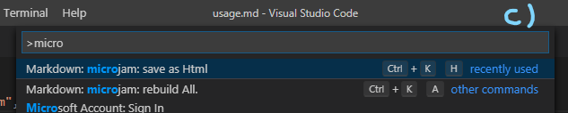

Usage #
Pré-requis #
On suppose que vous
- avez des connaissances de base, comment utiliser Visual Studio Code.
- avez installé avec succès μJam extension to VSCode.
Activation #
μJam est une extension de VSCode et VSCode l'activera sous certaines conditions. As & mu; Jam traite principalement & ndash; ou plus précis exclusivement & ndash; avec les fichiers markdown, il sera activé, lorsque vous
- ouvrez votre premier fichier de démarque, ou ...
- démarrez VSCode avec un fichier markdown comme document actif
Vous verrez un message d'activation dans le coin inférieur droit de la fenêtre VSCode. Votre dossier de référentiel n'est pas nécessairement ouvert dans VSCode. & mu; Jam fonctionnera également en mode fichier unique.
Mais ... avoir activé correctement & mu; Jam ne signifie pas que cela fonctionne avec tous les fichiers de démarque. Il accepte les fichiers
- étant dans un répertoire
docsou l'un de ses sous-répertoiresdocs / **et ... - appartenant à un dépôt ayant une entrée
" microjam ": {...}dans sonpackage.json
seulement.
Générer des pages Web #
μJam peut faire exactement deux choses pour toi:
- générer / mettre à jour un fichier
htmlà partir d'un seul fichiermd... - générer / mettre à jour les fichiers
htmlà partir de ** tous les ** fichiersmddans un référentiel
Fichiers uniques Markdown #
Chaque fois que vous travaillez sur un fichier Markdown et enregistrez-le via
- menu
File > Save Asor (Ctrl + Shift + S) or ... - menu
File > Saveor (Ctrl + S)
son fichier html correspondant sera généré automatiquement par μJam, qui mettra également à jour le fichier pages.json et éventuellement certains fichiers index, si vous aviez modifié un "layout": "article" document.
** Remarque: ** Cette commande
Fichier> Enregistrer** uniquement ** enregistre son fichier Markdown, s'il a été modifié depuis sa dernière commande de stockage. Ce n'est que dans ce cas que le fichierhtmlcorrespondant est mis à jour.
Afin de vous aider à * forcer la mise à jour d'un seul fichier *, & mu; Jam nous fournit la commande Ctrl & nbsp; + & nbsp; K & nbsp; H (pensez à Html). Ceci est également disponible via différents menus (voir ci-dessous).
Tout fichier Markdown #
Il peut s'avérer nécessaire de reconstruire tous les fichiers html. Un scénario est que nous venons de modifier nos modèles dans template.js.
Pour archiver ceci, nous pouvons utiliser la commande μJam Ctrl + K A (pensez à Tout).

Veuillez noter que seuls les trois derniers fichiers reconstruits sont visibles une fois terminés en tant que messages μJam.
Menus #




Duex commandes μJam sont accessibles via
- Menu contextuel de l'éditeur (clic droit) (a)
- Menu titre de l'éditeur (b)
- Palette de commandes globale VSCode (c)
- Menu contextuel de l'explorateur (d)
Remarque: Les menus dans VSCode sont définis statiquement avec des extensions comme μJam. Ainsi, les menus ci-dessus sont toujours affichés lors de l'édition de tout document markdown. Mais avec des documents markdown n'appartenant pas à un référentiel valide, l'invocation de ces commandes de menu n'aura silencieusement aucun effet.
Supprimer manuellement des fichiers #
Vous ne voudrez généralement pas supprimer les fichiers générés automatiquement, car ils sont régulièrement mis à jour par & mu; Jam. Mais si vous souhaitez explicitement le faire, vous pouvez utiliser la vue Explorateur (Fig. 5).

- Il est sûr de supprimer tous les fichiers
*.htmlainsi quepages.json( Supprimer ou Shift + Supprimer ). - Si vous supprimez manuellement un fichier markdown, son fichier
htmlcorrespondant sera systématiquement supprimé par μJam lors de la prochaine exécution de la commande.pages.jsonsera également mis à jour en conséquence. - Vous pouvez supprimer le dossier
docs/themeet même le répertoire.vscode.μJam les générera à nouveau en utilisant le contenu par défaut. Mais sachez que les personnalisations ou copies possibles se perdent alors. Vous ne voulez généralement pas faire ça. - Vous ne devez supprimer aucun autre fichier de votre référentiel, sauf que vous savez ce que vous faites.
** Remarque: ** L'ordre de tri des fichiers par type a du sens dans la vue de l'explorateur, mais ce n'est pas l'ordre par défaut de VSCode. Ainsi μJam ajoute une entrée
""explorer.sortOrder":"type"au fichier de paramètres utilisateur.vscode/settings.json. Vous pouvez ajouter plus de paramètres individuels à ce fichier.
Editer und fichier Markdown #
Il n'y a pas grand-chose à dire ici, car l'édition markdown est parfaitement effectuée par l'éditeur VSCode. Seules quelques fonctionnalités d'assistance de & mu; Jam méritent d'être mentionnées.
Extrait de frontmatter #
Lors du démarrage d'un nouveau fichier markdown, μJam vous assiste en insérant un modèle frontmatter partiellement rempli à l'emplacement actuel de l'éditeur.

Simple type Ctrl+k - pour avoir ça.
Extrait de table de contenu #
When finishing a markdown document containing several headings possibly in multiple levels, we would welcome an automatic generation of a table of contents (toc). This is inserted at current editor location by μJam at our fingertips.
Simply type Ctrl+k t (think toc) for getting this.
** Remarque: ** La table des matières insérée est statique et non configurable, c'est-à-dire minimaliste:
- Si vous ne voulez pas avoir d'en-tête dans le toc (peut-être «Contenu»), supprimez-le simplement de la liste générée dans le document markdown.
- La génération de certains niveaux toc uniquement n'est pas prise en charge. Supprimez simplement les entrées indésirables manuellement.
- Si vous modifiez le texte d'un titre, la toc ne se mettra pas à jour automatiquement. Recréez la toc puis manuellement.
- Les entêtes des sections de code markdown sont également insérés de manière incorrecte. Vous devez les supprimer manuellement.
Extrait de liste de navigation #
Parfois, nous ne voulons pas avoir de table des matières interne, mais une liste de navigation externe. Avec cela, nous pourrions composer une barre latérale de navigation. Dans ce cas, nous voulons avoir des URL locales explicites html, comme dans ...
- [Installation](installationGuide.html#installation)
- [un nouveau projet](installationGuide.html#a-new-project)
- [Generation du Contenu](installationGuide.html#generating-content)
- [Publier au monde](installationGuide.html#publish-to-the-world)
Pour obtenir cela, nous tapons Ctrl+k n (think nav).
Permaliens #
Cette fonctionnalité est copiée sans vergogne depuis GitHub. Dans le navigateur ... chaque fois que vous survolez avec votre pointeur un en-tête, un petit symbole apparaît. En survolant ensuite ce symbole, l'URI local du document de l'en-tête en question peut être copié (clic droit) et affiché dans la barre d'état en même temps.

Avec cette fonctionnalité activée, vos visiteurs peuvent copier et coller cet emplacement et ainsi créer un lien dans vos pages à l'aide de ces permaliens.
Pour activer cette fonctionnalité, vous devez ajouter
---
"permaliens": "#"
---
à la section frontmatter de votre page. Vous êtes autorisé à prendre un symbole de caractère de votre choix. "permalink": true est également possible, avec '#' comme symbole par défaut.
markdown-it Plugins #
VSCode utilise markdown-it comme son analyseur de démarques en interne, tout comme & mu; Jam. Il existe de nombreux plugins markdown-it disponibles. μJam ne prend en charge que deux d'entre eux actuellement:
- Plugin mathématique
markdown-it-texmath - Plugin de notes de bas de page
markdown-it-footnotes
Comme ils sont tous les deux inactifs au départ, nous pouvons les activer & ndash; si nous voulons & ndash; en ajoutant ce qui suit à .vscode/settings.json ...
"microjam.markdownItPlugins": {
"markdown-it-texmath": {
"engine": "katex",
"delimiters": "dollars",
"macros": {"\\RR": "\\mathbb{R}"}
},
"markdown-it-footnote": {}
}
Il est possible d'étendre μJam en utilisant d'autres plugins markdown-it, mais cela sort du cadre de ce manuel de l'utilisateur.
Publier sur GitHub #
Nous supposons ici que vous avez déjà un référentiel GitHub local et distant valide. Lire guide installation autrement.
Pour publier vos fichiers générés ou modifiés sur GitHub, vous pouvez utiliser la vue * Contrôle de source *.
- Tapez une chaîne de message de validation.
- Envoyez-le par Ctrl + Entrée .
- Appuyez sur le symbole * flèche vers le haut * dans la barre d'état.
Le flux de travail habituel #
Je voudrais vous montrer à quoi ressemble le travail sur votre site Web, une fois que vous avez tout installé et que vous avez déjà écrit vos fichiers de démarque.
- Vous ouvrirez à nouveau votre répertoire de projet
first, qui a déjà la structure suivante
/first
|_ package.json
|_ /docs
|_ /theme
|_ index.html
|_ one.html
|_ two.html
|_ pages.json
|_ index.md
|_ one.md
|_ two.md
-
Ajoutez un fichier
readme.md(contenu ci-dessous) et enregistrez-le ( Ctrl + Shift + S ) dans le dossier racine de votre projet. Son contenu pourrait être un peu commeun référentiel d'échantillons minimal pour μJam. -
Modifiez le contenu de «one.md» et enregistrez ( Ctrl + S ).
-
Tapez un * message de validation * `` Ajouter un fichier readme '' ( Ctrl + Entrée ).
-
Dans une fenêtre de message
vscodeéventuellement à venirSouhaitez-vous automatiquement ...sélectionnezToujours. -
Dans la barre d'état VSCode, sélectionnez le petit symbole «cloud» ou «flèche vers le haut» pour télécharger les fichiers modifiés sur GitHub.


C'est tout. Veuillez vérifier l'arrivée du fichier readme sur Github et la mise à jour réussie de votre site Web.
Les étapes «2-3-5» ci-dessus, c'est-à-dire
- modifier le contenu
- type message de validation
- télécharger sur GitHub
est tout ce que vous devez faire à partir de maintenant.
Juste pour mentionner & ndash; cette documentation a été rédigée par μJam au cours d'un processus appelé dogfooding :).
Bonne publication ...
Templates #
- microjam-simple – Un modèle de site Web simple pour μJam
- microjam-tufte – Un modèle de style Tufte pour μJam
- microjam-docs – Un thème de documentation pour μjam avec barre latérale
- microjam-g2 – Un theme pour μjam + g2
Entrées en première page #
| Entry | Type | Comment |
|---|---|---|
auteur |
string | Nom(s) de l'auteur utilisé(s) par les moteurs de recherche. |
date |
string | Creation d'une date yyyy-mm-dd comme 2020-12-31. |
description |
string | Description de la page utilisée par les moteurs de recherche. |
longueur |
string | utilisé par le navigateur pour la césure. La valeur par défaut est "en". |
layout |
enum | μJam connaît les types de mise en page suivants:["page","article","index","none"]D'autres types de mise en page personnalisés sont pris en charge et traitées comme des "mises en page" en interne. |
math |
boolean | Prise en charge des formules mathématiques LaTeX utilisant les délimiteurs "$". |
permalink |
string | true |
Placez le symbole de caractère comme ancre de lien derrière les titres. Le symbole de caractère par défaut est "#". |
tags |
tableau de chaînes de caractères | utilisées comme mots-clés pour les moteurs de recherche. Exemple ["web,"page","physics","svg"] |
titre |
string | Titre de la page affiché dans la barre de titre du navigateur. |
uses |
array of objects | Injecter des ressources externes dans la page. Exemple "uses":[ { "uri": "navigation.md" } ] |
Commandes clavier #
| Command | Mnemonic | Menu | Action |
|---|---|---|---|
| Ctrl + K H | Html | – | Générer un seul fichier Html |
| Ctrl + K A | All | – | Generer tous les fichiers Html |
| Ctrl + K - | --- | – | Insérer un modèle de frontmatter |
| Ctrl + K T | ToC | – | Insérer une table des matières |
| Ctrl + K N | Nav | – | Copier le démarque de navigation dans le presse-papiers |
| Ctrl + K V | preView | – | Ouvrir un preview window |
| Ctrl + Enter | – | – | Valider les modifications |
| Ctrl + Shift + S | Save As | File > Save As |
Enregistrer le fichier sous ... |
| Ctrl + S | Save | File > Save |
Sauvegarder le fichier |
| Ctrl + C | Copy | Edit > Copy |
Copier le texte dans le presse-papiers |
| Ctrl + V | Paste | Edit > Paste |
Récupérer le texte du presse-papiers |
Les utilisateurs Apple appuieront sur la touche Cmd au lieu de la touche Ctrl .
References #
[1] jamstack.wtf
[2] Not Your Dad's IT
[3] Where can I find the GitHub ID in my account?
[4]: Version Control Basics with Github and VS Code
[5] Version Controlling with Git in Visual Studio Code and GitHub
[6] Versionskontrolle mit Git auf einem Hoster wie GitHub, GitLab, BitBucket unter Visual Studio Code einrichten
[7] Git Integration in Visual Studio Code
[8] CommonMark - Specification of Markdown
[9] Configuring a custom domain for your GitHub Pages site